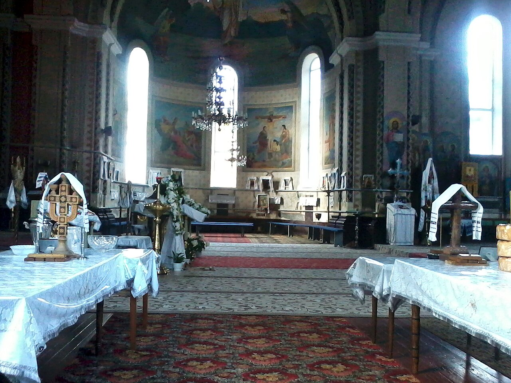

Свято-Миколаївська церква: духовна домінанта середмістя
Велична мурована Свято-Миколаївська церква, зведена у 1876 році на центральній вулиці міста, стала духовним осередком православної громади Кіцманя. Її архітектура поєднує класичні буковинські пропорції з неовізантійським купольним завершенням та витонченим декоративним аркатурним поясом під карнизом.
У стінах храму впродовж поколінь хрестили дітей, вінчали молоді родини й молилися за мир на буковинській землі. Навіть у найскладніші історичні часи ХХ століття дзвони храму продовжували збирати кіцманчан на великодні та різдвяні богослужіння.
«Дзвін Свято-Миколаївського храму в Кіцмані завжди був голосом совісті й надії для всього краю над Совицею.» Із краєзнавчих нотаток Буковини